CAPÍTULO 1
PERSONAS
1
In this chapter, you will learn how to introduce yourself and write a text, or piece of writing for an online platform.
LEARNING OUTCOMES
` Introduce yourself and others
` Exchange personal information (I)
VOCABULARY
` Activities to learn a language
` Interesting topics in a Spanish course
LANGUAGE STRUCTURES
` Subject pronouns
` Present tense of regular verbs
` The verbs llamarse and ser
` Nouns and articles
ORAL AND WRITTEN TEXTS
` Communication resources in the Spanish classroom
` Basic politeness
` How to create a text
SOUNDS
` Alphabet and sounds
CULTURE
` Linguistic landscape (USA)
` Hispanic artistic heritage in the United States
PROJECTS
` Group: introduce yourselves to the class
` Individual: introduce yourself in writing on an online platform
PARA EMPEZAR CAPÍTULO 1
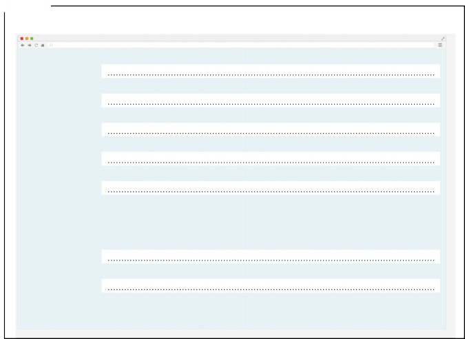
PREPÁRATE
1. Fill out this form with your personal information.
Semester Trimestre Term-Quarter
(Fall) de invierno (Winter) de primavera (Spring) de verano (Summer)
CURSO ACADÉMICO ACADEMIC YEAR
Cuarto año Senior
Otros Other
Estudiante de primer año Freshman
Estudiante de segundo año Sophomore
Estudiante de tercer año Junior
UNIVERSIDAD COLLEGE, UNIVERSITY
PROMOCIÓN CLASS
LUGAR DE ORIGEN PLACE OF ORIGIN
CORREO ELECTRÓNICO E-MAIL
APELLIDO LAST NAME
NOMBRE FIRST NAME
de otoño
Semestre
EN LA RED
Complete this introduction and then introduce
(Yo) me llamo
(Yo) soy estudiante de
yourself to the class.
> Hola. (Yo) me llamo Brendan Kruger.
Soy estudiante de primer año.
ATENCIÓN
ATENCIÓN
ATENCIÓN
To greet:
¿Qué tal? Buenos días.
Buenas tardes. Buenas noches.
To introduce yourself:
(Yo) soy Brendan. = (Yo) me llamo Brendan.
Soy estudiante de primero.
Me llamo es Brendan.
Mi nombre es Brendan.
To ask:
¿Cómo te llamas?
¿Cuál es tu apellido?
¿Qué estudias?
Write down the information of two other students in the class.

Estudiante 1
(Él/Ella) se llama
Es estudiante de
Estudiante 2
(Él/Ella) se llama
Es estudiante de

3
PARA EMPEZAR
IMÁGENES

Four people are sharing photos of famous landmarks in their hometowns.
In pairs, match the name of each landmark with its corresponding photo.
Esto es el puente / la playa de…
El puente de Brooklyn La Giralda de Kansas City La playa de Santa Bárbara La Giralda de Sevilla
Sophia Kansas Estudiante de español | Marta Sevilla Profesora de español | Nat Nueva York Estudiante de cine | Emma Santa Bárbara Estudiante de biología | ||||
Es de Estados Unidos/Illinois… Es estudiante de… Es profesor(a) de… | |||||||
Use the information provided to write an introduction for each person.
TALK ABOUT PROFESSIONS
ser + nombre
Sofía es estudiante.
TALK ABOUT ORIGIN
ser de + lugar
Mark es de EE. UU.
ASK ABOUT ORIGIN
¿De dónde es Sophia?
ATENCIÓN
Sophia es de Kansas. Es estudiante de español.
Find a photo from your hometown and explain where you are from.
(Yo) soy de Seattle. Esto es el Fish Market.
PALABRAS CLAVE
Carefully read this list of academic departments and programs. Which English cognates do you
recognize? In groups, look up the words you don't recognize in the dictionary.
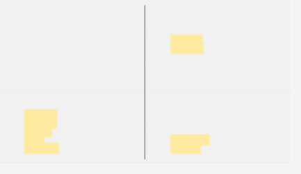
> Antropología es 'Anthropology', ¿no?
Lingüística
Literatura Comparada Mercadotecnia Matemáticas Medicina
Negocios Neurociencia Oftalmología Periodismo Psicología Química
Relaciones Internacionales
Sociología Salud Teatro Urbanismo Veterinaria Zoología
N
O P
Q R S
T U V Z
L
M
Antropología Biología
Ciencias de la Computación Cine
Danza Derecho
Derechos Humanos
Educación
Economía y Finanzas Escritura creativa Estadística
Estudios Asiáticos Estudios Latinoamericanos Farmacia
Genética Historia Inglés Ingeniería
A B C
D E
F G H I
ATENCIÓN
CLASSROOM COMMUNICATION
—¿Qué significa Derecho? (What does Derecho mean?)
—Significa Law. (It means Law.)
—¿Cómo se dice Chemistry
en español? (How do you say Chemistry in Spanish?)
—Chemistry se dice Química.
(Chemistry in Spanish is Química.)
What are you studying this semester? Complete the sentence and share with your classmates.

Este semestre estudio (I'm studying)
4
copy
VIDEO TRANSCRIPCIÓN
CAPÍTULO 1
VIDEO: HOLA, SOY MARCELA
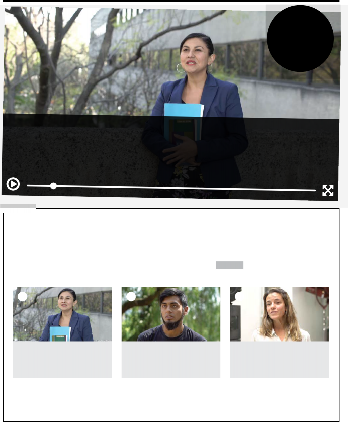
Género:
Entrevista
País:
México
Año:
2019
PREPÁRATE
Watch the video. At which university are these three people studying? In which country?
1 Estudian en…
Watch the video again and match this information with the three interviewees.
Daniela
1 Jason Montevideo (Uruguay) Santiago de Chile (Chile)
Marcela
Producción un doctorado en Historiografía Cultural Letras Hispánicas Pasto (Colombia)
1 2 3
Se llama Es de Estudia
Se llama Es de Estudia
Se llama Es de Estudia
The favorite words of these three people are coraje, utopía, and playa. Find the meaning of each in a dictionary and write it down.
Write down a word that you know in Spanish, along with its meaning.
LA CAFETERÍA
What is your favorite word in English? Why?
In pairs, compare your answers to activities 9, 10 and 11.
In groups, share the words that you wrote in activity 12.

5
DOCUMENTOS PARA DESCUBRIR
NUESTROS TEMAS
Look at these photos and read about the topics included in Proyectos. Write the topic that corresponds with each photo.
CON
PROYECTOS
1. la gastronomía 2. 3. 4. 5. 6.
ATENCIÓN
7.
8.
9.
10.
11.
12.
LOS
ESTUDIANTES HABLAN,
LEEN Y ESCRIBEN SOBRE...
In groups, compare your answers to activity 15.
In groups, take turns sharing which themes interest you.
Follow the model.
Para mí, es interesante la política.
Para mí, son interesantes las tradiciones.
> —Para mí, son interesantes los problemas del medioambiente.
—Pues, para mí, la gastronomía.
Three students of Spanish talk about the topics that are
important to them. Write them down.
Mike:
Kathy:
Bill:
In groups, what other topics interest you?
Find photos and prepare a presentation about the topics you choose.
→ la literatura en español
→ la mercadotecnia y la
publicidad
→ la geografía del mundo hispano
→ la historia del mundo hispano
→ la política
→ los problemas del
medioambiente
→ la gastronomía hispana
→ el arte
→ LAS CIUDADES
NUESTROS TEMAS
→ las
celebraciones
tradiciones
hispano
y las
del mundo
→ las redes sociales
→ el español como lengua internacional
→ la vida de los estudiantes universitarios
→ LA MÚSICA
6

uno
dos
tres
cuatro
cinco
seis
siete
ocho
nueve
diez
once 16 dieciséis
doce 17 diecisiete
trece 18 dieciocho
catorce 19 diecinueve
quince 20 veinte
CAPÍTULO 1
1 2
3 4
7
5 6
8
128 M• 88 .7 ..,
Hmdl
(lndial
335M . 260M .
! ;•
.11
.
470.1197
I :
Situeci6ni me.xic ena
10 ti mLO(lo
,..----:,
Le.ngues
e-Xisle<1tos
7 1 0 2
11 12
li:!a:
'l'll/8S lengLBS Bn .

7
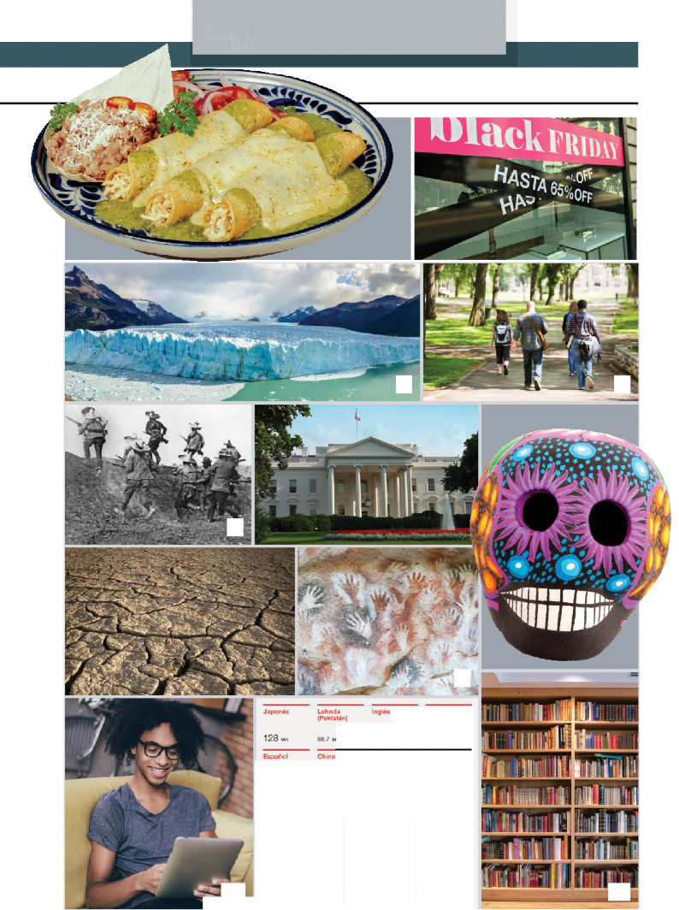
ENTENDER CÓMO FUNCIONA LA LENGUA
LAS PERSONAS DEL VERBO
PREPÁRATE
Look at the photos and read the conversations. Then fill out the table with the correct subject pronouns.
Buenos días, yo soy Ana, ¿tú eres…?
Yo soy Arturo, encantado.
Hola, soy Marta, ¿ustedes son también estudiantes de segundo año?
Sí, somos de segundo; yo soy Carlos y ella es Estela.
¡Encantada! ¿Son de aquí, de Bogotá?
Yo sí, pero Carlos, no; él es de Cali.
Hola, ¿ustedes son estudiantes de primer año?
No, nosotras somos de segundo año, pero ellos sí, ellos son de primer año.
Buenos días, ¿usted es el nuevo (new) profesor de Español?
Sí, y usted es la profesora de Economía, ¿no?
¿Son estudiantes de segundo año?
No, nosotras somos de primer año.
Nosotros sí, nosotros somos de segundo.
¿Ustedes son de la Universidad de Chile?
No, nosotros somos de la Universidad de Valparaíso, pero ellas sí, ellas son de la Universidad de Chile.
pronombres | SER |
| soy |
| eres |
es | |
| somos |
vosotros/as | sois |
son |
ATENCIÓN
Vosotros is the plural form of you. It is
used exclusively in Spain. The rest of the Spanish-speaking world uses ustedes:
—¿Vosotros sois de Barcelona?
—Él sí, pero yo soy de Madrid.
encantado/a: pleased to meet you
también: also
8
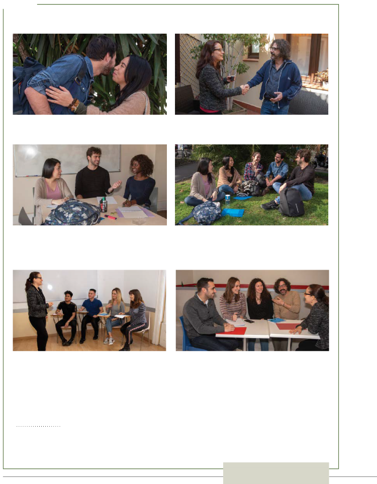

CAPÍTULO 1
GRAMÁTICA
In pairs, compare your answers to activity 20.
In groups of two, three, or five, choose one of the scenes in
activity 20 and perform it using your own information.
–Hola, soy Mark, ¿ustedes son también estudiantes de primer año?
–Sí, somos de primero; yo soy Anna y ella es Tricia.
–¡Encantado! ¿Son de aquí, de Los Ángeles?
–Yo sí, pero Tricia, no; ella es de Nueva York.
In pairs, write the English pronoun that corresponds
to each pronoun in Spanish.
> — Nosotros es 'we', ¿no?
— Sí, y nosotras también.
yo:
tú:
usted:
él:
ella:
nosotros:
nosotras:
vosotros:
vosotras:
ellos:
ellas:
ustedes:
ESTRATEGIAS
Reflecting on your
own language activates knowledge that you can apply when learning a new language.
In groups, read the statements on pronouns and say whether they refer to Spanish or
English. Then write the pronouns.
There are 12 subject pronouns in this language. Spanish. Yo, tú, él, ella, usted, nosotros, nosotras, vosotros, vosotras, ellos, ellas, ustedes.
There's one pronoun that has the same form in the singular and plural.
There are 7 subject pronouns.

In this language, there is one masculine subject pronoun and one feminine subject pronoun.

In this language, there are four subject pronouns with a masculine form and four with a feminine form.

9
ENTENDER CÓMO FUNCIONA LA LENGUA
GÉNERO Y NÚMERO
PREPÁRATE
25. Identify and mark the gender and number of these nouns referring to people. Write other examples in your notebook.
26. Mark the gender and number of these nouns referring to things. Then add two more nouns.
GRAMÁTICA
Masculino singular | Femenino singular | Masculino o femenino plural | Masculino plural | Femenino plural | ||
-o/-a | El compañero | | | | | |
La compañera | | | | | | |
Los compañeros | | | | | | |
Las compañeras | | | | | | |
-e | Los estudiantes | | | | | |
Las estudiantes | | | | | | |
El estudiante | | | | | | |
La estudiante | | | | | | |
-or/ -ora | El profesor | | | | | |
Las profesoras | | | | | | |
La profesora | | | | | | |
Los profesores | | | | | |
Masculino singular | Femenino singular | Masculino plural | Femenino plural | |
La clase | | | | |
Las clases | | | | |
El libro | | | | |
Los libros | | | | |
La playa | | | | |
Las playas | | | | |
La actividad | | | | |
Las actividades | | | | |
| | | | |
| | | |
Compare your answers to activities 25 and 26 with a partner. Then find other examples

ATENCIÓN
LA CAFETERÍA
Do you think languages can be sexist?
In Spanish, the masculine plural form is used to refer to groups including both masculine and feminine nouns: los compañeros = los compañeros + las compañeras
Some people prefer to use alternatives such as:
compañeros y compañeras or, when writing, lxs compañerxs / l@s compañer@s: los compañeros + las compañeras
of nouns in this chapter and identify their gender and number together.
10

CAPÍTULO 1
ACTIVIDADES DE MI CLASE DE ESPAÑOL
PREPÁRATE
28. Match these verbs with their corresponding icons.
escuchar
leer
hablar
escribir
trabajar
29. Match the activities with the photos.
escuchar audios
leer libros
hablar en español
ver videos
trabajar en grupos
trabajar en parejas
escribir correos (e-mails)
escribir textos
E
D
C
B
A
VOCABULARIO Y GRAMÁTICA
HOLA A
TODOS, ME LLAMO
VICTORIA.
Compare your answers to activities 28 and 29 with a classmate.
TEMAS DEL CURSO DE ESPAÑOL
VOCABULARIO
Work in groups to complete the table. What do you know about the Spanish-speaking world in relation to these
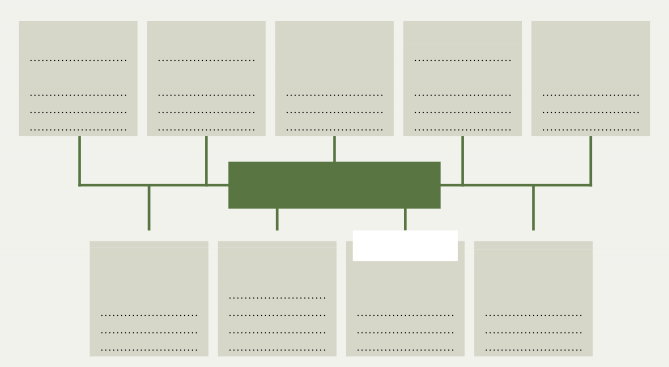
La geografía
La música
El cine
Las islas Galápagos
La salsa
La historia
y la política
Guillermo del Toro La independencia
de Puerto Rico
La gastronomía
El ceviche
TEMAS DEL CURSO DE ESPAÑOL
El deporte
El arte
Las tradiciones y las celebraciones
El carnaval de B arranquilla
Las ciudades
Cartagena de Indias
Pablo Picasso
Miguel Cabrera
topics? You may use a dictionary.

11
copy
ENTENDER CÓMO FUNCIONA LA LENGUA
AUDIO TRANSCRIPCIÓN
EL ABECEDARIO Y LOS SONIDOS
SONIDOS
Listen to the Spanish alphabet and write the names of the letters in the Nombre columns of the table.
Letra | Nombre | Ejemplos | Se parece a… |
A | a | adiós | La u en hut |
B | be | buenos, escribir |
|
C |
| correo, doce |
|
D |
| días |
|
E |
| estudiar |
|
F |
| favor |
|
G |
| pregunta, página |
|
H |
| hola |
|
I |
| imagen |
|
J |
| pareja |
|
K |
| kilómetro |
|
L |
| lugar |
|
M |
| mundo |
|
N |
| noches |
Letra | Nombre | Ejemplos | Se parece a... |
Ñ |
| español |
|
O |
| once |
|
P |
| profesor |
|
Q |
| química | |
R |
| respuesta, correo, para |
|
S |
| seis | |
T |
| tardes |
|
U |
| universidad |
|
V |
| verbo, actividad | |
W |
| wifi | |
X |
| texto |
|
Y |
| yo | |
Z |
| zoo |
|
Listen to the pronunciation of the example words in activity 32.
Then, in the Se parece a… column, write an English word with a similar sound.
Listen to the pronunciation of these letters in the following words.
Although they are not part of the alphabet, these two pairs of letters —ch and ll—
represent distinct sounds in Spanish.
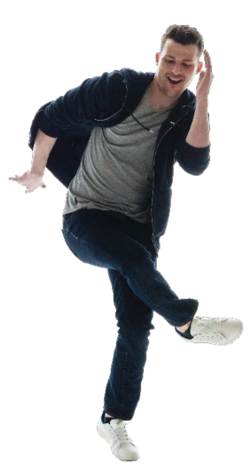
Are there similar sounds in English?
ATENCIÓN
CH | chocolate/escucha/noche |
LL | llamarse |

How do you spell your first name, last name, and city/
town? How do you pronounce them? Tell a partner.
—Me llamo Elizabeth.
—¿Cómo se escribe?
—E, ele, i, zeta, a, be, e, te, hache.
—¿Y cuál es tu apellido?
—Baker.
—¿Cómo se escribe?
—Be, a, ka, e, erre.
—¿De dónde eres?
—Soy de Nogales, de Arizona.
—¿Cómo se escribe Nogales?
—Ene, o, ge, a, ele, e, ese.
In groups, write the Spanish alphabet using words.
You may look up words in a dictionary.
A de América

B de Buenos días

12

CAPÍTULO 1
RECURSOS PARA COMUNICARNOS EN LA CLASE DE ESPAÑOL
VOCABULARIO
PREPÁRATE
Match the Spanish questions with their equivalents in English. Look for cognates and use a dictionary, if necessary.
¿Puedo ir al baño?
¿Puede/Puedes repetir (,por favor)?
¿Cómo se dice… en español?
¿Qué significa…?
¿Cómo se pronuncia…?
¿Cómo se escribe…?
¿Qué tarea tenemos?
¿Qué página?
What’s for homework?
What page?
How do you say… in Spanish?
What does… mean?
How do you pronounce…?
May I go to the bathroom?
Can you repeat please?
How do you spell…?
ATENCIÓN ESTRATEGIAS
¿Puede repetir? = usted
¿Puedes repetir? = tú
Cognates are words that are the same or
similar and etymologically related in different languages. Recognizing them will help you
understand new words in Spanish.
pronunciar – to pronounce
página – page
In pairs, compare your answers to activity 37. Then complete the dialogues by writing
the question that goes with each answer.
1.
–¿Puede/Puedes repetir (, por favor)?
–Sí: la terminación –s es para la forma tú.
2.
–
–Quince (15), página quince.
3.
–
–Se dice ‘libro’.
4.
–
–Hache, i, ese, te, o, erre, i, a: his-to-ria.
5.
–
–Leer el texto de la página quince (15).
6.
–
–Significa classmate.
CORTESÍA BÁSICA PARA LA CLASE DE ESPAÑOL
Match the groups of expressions 1 to 4 with the corresponding category.
disculpas (apologies)
despedidas (farewells)
saludos (greetings)
agradecimientos (thanks)
VOCABULARIO
1.
Hola.
¿Qué tal?
(Hola,) buenos días. (Hola,) buenas tardes. (Hola,) buenas noches.
2.
Hasta luego. Hasta mañana.
Hasta el lunes/martes/ miércoles...
Buen fin de semana.
3.
(Muchas) gracias. De nada.
4.
Lo siento. Perdona (= tú). Perdone (= usted).

13
CULTURAS
ESPAÑOL EN ESTADOS UNIDOS
ESTADOS UNIDOS
The text in Spanish is hidden in the eight photos above. Match the texts with the right photo.
Jugos naturales & batidas.
Se rentan cuartos.
Cuidado. Piso mojado.
Prohibido fumar en cualquier lugar del hospital.
¿Olor a gas? Actúe de inmediato.
Cuarto piso.
Compramos oro.
Gratis.
What words did you already know? Can you guess the meaning of any new vocabulary?
> Cuidado significa 'Caution'.
Find similar texts—in Spanish only or in English and Spanish—where you study or live, or somewhere in the United States. Explain where they are and what they say.

14
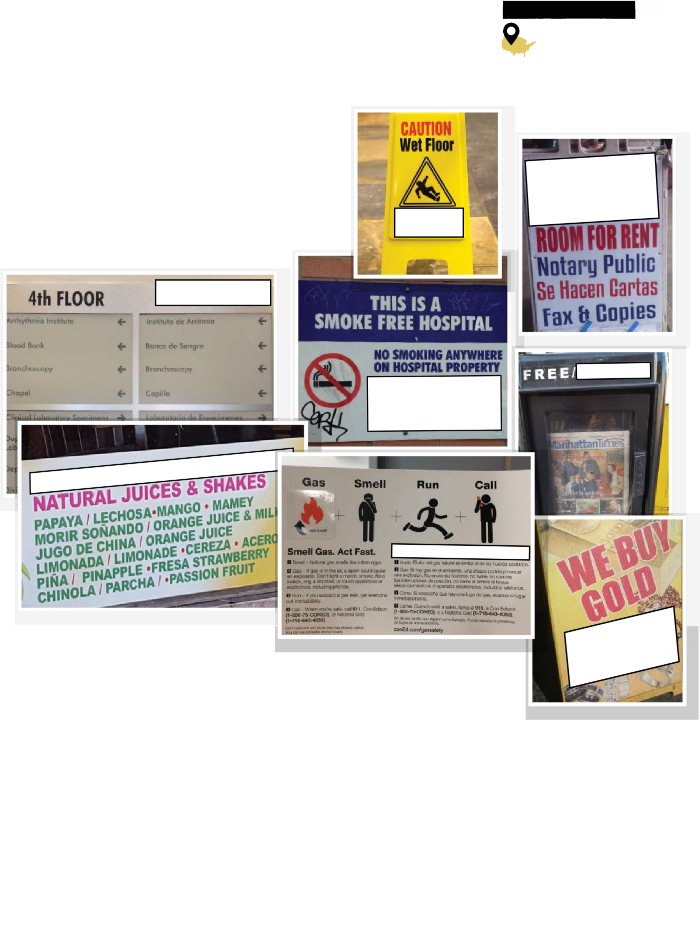
M
ulticulturalism is one of the most distinctive charac-
teristics of the United States. We can see examples of this co-existence of cultures by observing the linguistic landscape -that is, the presence of language in public spaces. Hispanic communities in particular become visible in cities in the United States through the use of
Spanish. Here are some examples.
ANTES DE LEER
What do you think “linguistic landscape” means?
DESPUÉS DE LEER
Read the introductory text to confirm your hypothesis.
CAPÍTULO 1
PINTURA

ESTADOS UNIDOS
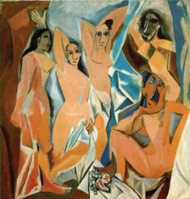
En Estados Unidos se encuentran algunas obras importantes de pintores de habla hispana.
Estas son dos de ellas.
© 2019 Banco de México Diego Rivera Frida Kahlo Museums Trust, Mexico, D.F. /VEGAP
Detalle de Unidad Panamericana, Diego Rivera (1886-1957) Las señoritas de Avignon, Pablo Picasso (1881-1973)
ANTES DE LEER
Look at these paintings. Have you seen them before? What do you know about the artists?
DESPUÉS DE LEER
Read the text. What do the two works have in common?
Match each piece of information with the correct painting. You may search online.
Museo MOMA, Nueva York. f. Pintado en Estados Unidos.
City College de San Francisco. g. Es una pintura al óleo (oil).
Primera obra considerada cubista. h. El tema es la unión del arte del sur y del norte del
Es una pintura mural (pintada en un muro). continente americano.
Es de 1940. i. Es de 1907.
Search online for works of art by other Spanish-speaking artists in the U.S. and share your findings.
Here are some names.
Dalí Botero Kahlo Sert Varo Plensa …

15
CONOCER LOS TEXTOS

PREPARAR VOCABULARIO PARA TEXTOS Y EXÁMENES
PREPÁRATE
Read the text. Which of the following pieces of advice do you follow when you write a text? Underline them.
BEFORE YOU WRITE
What type of text is it? A form, an email, an infographic, a poster, an academic essay, a summary, an exam, a newspaper article, an advertisement, a poem, etc.?
What strategies are used in this type of text? Description, narration, exposition,
argumentation, explanation, etc.? Very important: look for examples of similar texts to learn about their characteristics, register (level and style of language), vocabulary,
and structures.
What topic(s) will be dealt with?
What is its purpose? Who are the target readers and what are their expectations?
Does it require any particular format or design? Does it contain any images or graphics? What is the length or number of words?
DURING THE WRITING PROCESS
Organize your ideas. Consider writing as a process, not a product. First of all, take notes for your draft by brainstorming, using outlines, lists, etc.
Write a first draft. Write an initial version of your text. Use your notes and start to create a text. Don’t forget the type of text, the topic, the target reader, and the purpose.
Write a second draft. Review your first draft, making any necessary changes. In order to do so, ask these questions about your text:
Does it conform to the characteristics of this type of text?
Is/Are the topic(s) clear? Are they relevant?
Is the goal of the text accomplished? Are the target readers’ expectations fulfilled?
Are the design, format, and length of the text adequate?

16
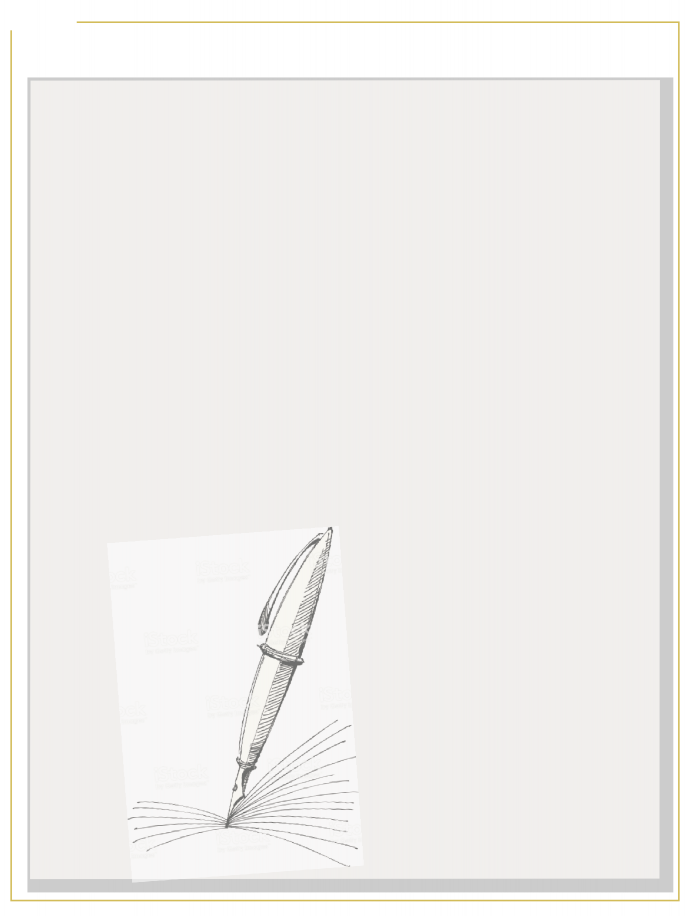

CAPÍTULO 1
PREPÁRATE
Grammar
Gender and number: Have you used the correct masculine/ feminine and singular/plural forms of nouns, adjectives, pronouns, and determiners (articles, demonstratives, possessives, or quantifiers)?
Verb system: Have you chosen the appropriate tenses and moods
to express your ideas? Have you checked your verbs for correct endings and spelling changes?
Prepositions: Have you consulted a dictionary to check that you have used the correct prepositions?
Does it conform to spelling and punctuation rules?
Vocabulary
Is it accurate and varied?
Is the register appropriate?
Is the vocabulary appropriate for the context?
Was more than one dictionary (monolingual/bilingual) used?
Coherence and cohesion
Is the general structure of the text coherent?
Are the presentation and organization of ideas logical?
Are discourse markers and connectors (pronouns, articles, demonstratives, possessives, etc.) used?
Is the format adequate and appropriate?
Does the text contain redundancies or unnecessary repetitions of words or structures? Are synonyms, pronouns, etc. used to avoid them?
BEFORE YOU FINISH
Write a final version. Proofread it carefully and consider if it needs more corrections. Cite all sources, including dictionaries.
In pairs, comment on these questions.
ATENCIÓN
You can use this
plan to review future writing assignments in this course.
Have you used these or similar procedures to write texts in a foreign language or in English?
ESTRATEGIAS
Reflecting on your method writing a text in English or in other languages can help you write better texts in Spanish.
Taking into account your learning style(s), which of these resources/procedures do you anticipate as being more or less relevant in this Spanish course?

17
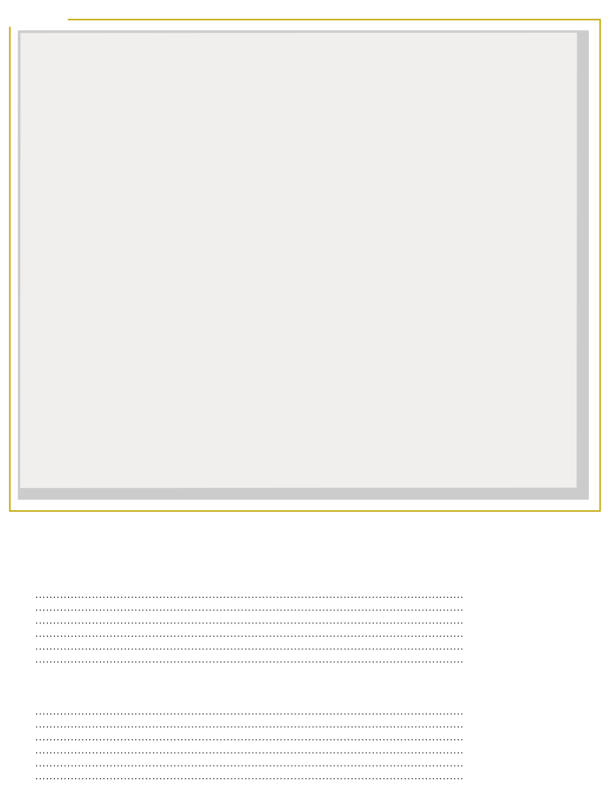
PROYECTOS
PROYECTO EN GRUPO

We introduce ourselves to the class.
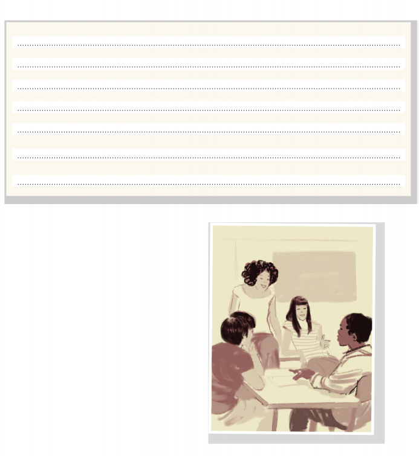
Fill out this form with your personal information.
NOMBRE Y SEGUNDO NOMBRE O INICIAL FIRST NAME AND MIDDLE NAME OR INITIAL
APELLIDO LAST NAME
PROCEDENCIA WHERE I AM FROM
ESTUDIOS. EN ESTE MOMENTO ESTUDIO I STUDY
CURSO YEAR
ACTIVIDADES DE CLASE INTERESANTES PARA MÍ CLASS ACTIVITIES I FIND INTERESTING
TEMAS INTERESANTES PARA MÍ TOPICS I FIND INTERESTING
In small groups, share your information from A.
¿Cómo te llamas? ¿Cuál es tu apellido?
¿De dónde eres?
¿Qué estudias?
¿Qué curso estudias?
¿Qué temas son interesantes para ti?
Choose a name for your group and present
yourselves to the rest of the class.
> —El grupo se llama El Dorado.
—Somos Eva, Mark, Lily y Duncan.
—Paul es de California y Mark, también.
—Sí, soy de Los Ángeles.
—Yo soy de Paso Robles.
—…

18

CAPÍTULO 1
PROYECTO INDIVIDUAL

Introduce yourself in writing on an online platform.
Prepare your draft with personal information.
User-edit
NOMBRE APELLIDO
LUGAR DE ORIGEN
TEMAS INTERESANTES PARA TI ESTUDIAS
Me llamo Kimberley Tomassini. Soy de Austin, Texas…
Biología, Español y Computación
La música, las series y los animales
Austin, Texas
Tomassini
Kimberley
You can add photos showing your interests, your favorite places, etc.
Write a final text.

19
RECURSOS LINGÜÍSTICOS
GRAMMAR
PERSONAL PRONOUNS
Spanish has first-, second-, and third-person personal pronouns, each with singular and plural forms. These correspond to the English personal pronouns I, you, he, she, it, we, you, they.
The pronoun vos (and its related verb forms) is used instead of tú in informal contexts in Argentina, Uruguay, Paraguay, Costa Rica, and Andean areas of Venezuela and Colombia.
Vosotros/-as is used only in Spain.
Ustedes is used everywhere in the Americas.
singular | plural |
yo | nosotros/as |
tú/vos | vosotros/as |
él, ella, usted | ellos, ellas, ustedes |
Ella es Amelia y yo soy Yirley.
¿Ustedes son estudiantes de primer año?
THE PRESENT
uConjugation of regular verbs: -ar, -er, -ir
In Spanish, there are three groups of verbs, called conjugations: those that end in -ar (1st conjugation), those that end in -er (2nd conjugation), and those that end in -ir (3rd conjugation).
ESTUDIAR | LEER | ESCRIBIR | |
yo | estudio | leo | escribo |
tú/vos | estudias/ás | lees/és | escribes/ís |
él, ella, usted | estudia | lee | escribe |
nosotros/-as | estudiamos | leemos | escribimos |
vosotros/-as | estudiáis | leéis | escribís |
ellos, ellas, ustedes | estudian | leen | escriben |
uThe present tense of the verb llamarse
In Spanish, some verbs are reflexive and always include the reflexive pronouns me, te, se, nos, os, se.
Yo me llamo Carla.
¿Tú cómo te llamas?
yo | me | llamo |
tú/vos | te | llamas/llamás |
él, ella, usted | se | llama |
nosotros/as | nos | llamamos |
vosotros/as | os | llamáis |
ellos, ellas, ustedes | se | llaman |
Me llamo Sofía.
Mi nombre es Sofía.
Me llamo es Sofía.
uThe present tense of the verb ser
yo | soy |
tú/vos | eres/sos |
él, ella, usted | es |
nosotros/as | somos |
vosotros/as | sois |
ellos, ellas, ustedes | son |
uUses of the verb ser
We use the verb ser + noun to identify a person, an object or a place.
Yo soy David.
Soy estudiante de segundo año.
—¿Qué es esto?
To identify objects, places, and situations (never
people), we can use the neutral pronoun.
Esto es Jim.
—Esto es el puente de Brooklyn.
We use ser de + location to talk about one's place of origin.
In Spanish, second person singular tú (vos) and plural
(vosotros/as) forms of verbs in the present tense end with -s:
Tú/Vos: -as(ás)/-es(és/ís) Vosotros/as: -áis, -éis, -s.
Tú estudias / Vos estudiás español.
Ella estudias español.
Ella estudia español.
Soy de América.
Soy de americano.
Soy de California, soy de San Diego.

20
TUTORIAL QUIZ
CAPÍTULO 1
PERSONAL INFORMATION
first person singular | second person singular | third person singular |
(Yo) soy Kim. | ¿(Tú) eres Tom? | (Ella) es Ali. |
(Yo) me llamo Kim. | ¿(Tú) te llamas Tom? | (Ella) se llama Ali. |
(Yo) soy de Nevada. | ¿(Tú) eres de Florida? | (Ella) es de Vermont. |
(Yo) soy estudiante. | ¿(Tú) eres estudiante? | (Ella) es estudiante. |
THE DEFINITE ARTICLE
masculine | feminine | |
singular | el | la |
plural | los | las |
The definite article is used to identify specific and known information:
Esto es el puente de Brooklyn.
La profesora de español se llama Marta. Para mí son interesantes los problemas del medioambiente.
Keep in mind that there can be exceptions.
La mano
El mano
El tema - Los temas
La tema - Las temas
Learn each new noun along with the
corresponding article. That way you will
always know if it is masculine or feminine.
PLURAL NOUNS
To form the plural, we add:
an -s to nouns that end with a vowel la clase → las clases
el compañero → los compañeros la letra → las letras
-es to nouns that end with a consonant la actividad → las actividades
el país → los países
–z > –ces
El lápiz - Los lápices
21
Las tradiciones del mundo hispano son muy variadas.
GENDER OF NOUNS
In Spanish, nouns that refer to people and animals have masculine and feminine forms, according to the gender of the person or animal.
masculine singular | feminine singular | |
-o>-a | el compañero | la compañera |
-or>-ora | el profesor | la profesora |
-e>-e | el estudiante | la estudiante |
Nouns that refer to objects, situations, ideas, etc. have one grammatical gender only.
masculine singular | |
-o | el libro |
-e | el nombre |
-s | el país |
feminine singular | |
-a | la letra |
-e | la clase |
-dad | la actividad |
RECURSOS LINGÜÍSTICOS
COMMUNICATION

CLASSROOM COMMUNICATION RESOURCES
Pedir permiso (Asking for permission)
¿Puedo ir al baño? (May I go to the bathroom?)
Pedir algo (Requesting an action)
¿Puede usted repetir, por favor? (Can you repeat, please?)
¿Puedes repetir, por favor? (Can you repeat, please?)
¿Puede deletrear 'universidad', por favor? (Can you spell 'universidad', please?)
Pedir información (Requesting information)
¿Cómo se dice… en español? (How do you say… in Spanish?)
¿Qué significa…? (What does... mean?)
¿Qué tarea tenemos? (What’s for homework?)
¿Qué página? (What page?)
Pedir instrucciones (Asking how to do something)
¿Cómo se pronuncia…? (How do you pronounce…?)
Este semestre estudio español.
POLITENESS IN THE CLASSROOM
Saludos y presentaciones (Greetings and introductions) Hola. ¿Qué tal? (How's it going? / How are you?)
Hola, buenos días / buenas tardes / buenas noches. (Good morning / Good afternoon / Good evening.) Soy Adrián, encantado.
(I'm Adrián, delighted to meet you.)
Yo también.
(Me, too.)
Despedidas (Farewells)
Hasta luego. (See you later.)
Hasta mañana. (See you tomorrow.)
Hasta el lunes/martes/miércoles... (See you on Monday/ Tuesday/Wednesday…)
Buen fin de semana. (Have a nice weekend.)
Agradecimientos (Thanks) (Muchas) gracias. (Thank you (very much).)
De nada. (You're welcome.)
Disculpas (Apologies) Lo siento. (I'm sorry.)
Perdone. (Excuse me.) Perdona. (Excuse me.)
22
¿Cómo se escribe…? (How do you spell/write...?) Con be de Bogotá. (With a b like Bogotá.)
PERSONAL INFORMATION
Nombre: ¿Cómo te llamas? (What's your name?) Apellido: ¿Cuál es tu apellido? / ¿Cómo te apellidas? (What's your last name?)
Procedencia: ¿De dónde eres? (Where do you come from?)
Estudios: ¿Qué estudias? (What are you studying?)
(I'm studying Spanish this semester.)

CAPÍTULO 1
VOCABULARY

TEMAS DE LA CLASE DE ESPAÑOL
(TOPICS IN THE SPANISH CLASS)
La gastronomía (Cuisine) La historia (History)
La política (Politics) La geografía (Geography)
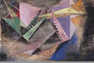
LOS NÚMEROS DEL 1 AL 20
(NUMBERS FROM 1 TO 20)
uno
dos
tres
cuatro
cinco
seis
siete
ocho
nueve
diez
El medioambiente
(The environment)
La mercadotecnia y la publicidad
(Marketing and advertising)
Las tradiciones y las celebraciones (Traditions and celebrations)
El cine
(Cinema)
El arte
(Art)
Los estudiantes universitarios (College students)
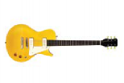
La música
(Music)
Las ciudades
(Cities)
once
doce
trece
catorce
quince
dieciséis
diecisiete
dieciocho
diecinueve
veinte

23
RECURSOS LINGÜÍSTICOS
RECURSOS LINGÜÍSTICOS

VOCABULARY
CURSOS Y MATERIAS (COURSES AND SUBJECTS)
(la) antropología
(Anthropology)

(el) derecho
(Law)

(la) estadística
(Statistics)
(la) ingeniería
(Engineering)
(la) mercadotecnia
(Marketing)
(la) biología
(Biology)
(la) economía y (las) finanzas
(Economics and Finance)
(la) farmacia
(Pharmaceutical Science)
(el) inglés
(English)
(los) negocios
(Business)
(las) ciencias de la computación (Computer Science)
(la) educación
(Education)
(la) genética
(Genetics)
(la) literatura
(Literature)
(el) periodismo
(Journalism)
(la) danza
(Dance)
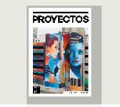
(el) español
(Spanish)
(la) historia
(History)
(la) medicina
(Medicine)
(la) química
(Chemistry)
24


CAPÍTULO 1
FREQUENT WORD COMBINATIONS

ACTIVIDADES DE CLASE (CLASS ACTIVITIES)
(las) relaciones internacionales (International Relations)
(la) veterinaria
(Veterinary Medicine)
(el) teatro
(Theater)
(la) zoología
(Zoology)
escuchar
audios música
to listen to audio/music

videos imágenes
ver
to watch videos to look at pictures

textos libros
leer
to read texts/books
CURSOS Y NÚMEROS (YEARS AND NUMBERS)
1 → | uno | → | primer curso/año |
(first year / freshman year) | |||
2 → | dos | → | segundo curso/año |
(second year / sophomore year) | |||
3 → | tres | → | tercer curso/año |
(third year / junior year) |
4 → cuatro → cuarto curso/año
(fourth year / senior year)
INFORMACIÓN PERSONAL
(PERSONAL INFORMATION)
el nombre (first name)
el apellido (last name)
la universidad (college, university)
la promoción (class)
el curso (year)
el semestre (semester)
escribir
textos correos electrónicos
en las redes sociales
to write texts/emails/in social networks

en español en inglés con un(a) compañero/a
con un(a) profesor(a) sobre un tema
hablar
to speak in Spanish / in English / with a classmate / with an instructor/professor / about a topic
en grupos en parejas
trabajar
to work in groups / in pairs
PERÍODOS LECTIVOS (ACADEMIC PERIODS)
de otoño de invierno
de primavera de verano
trimestre
fall/winter/spring/summer quarter/term
de otoño de primavera
semestre
fall/spring semester
un tema español
estudiar
to study a subject/Spanish
25